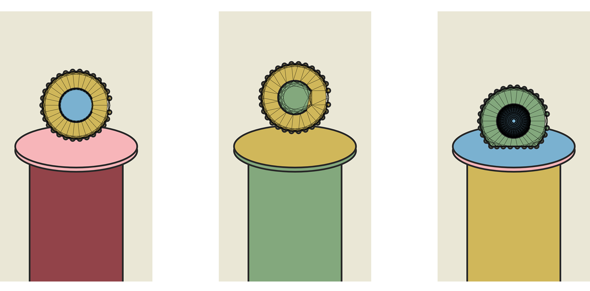
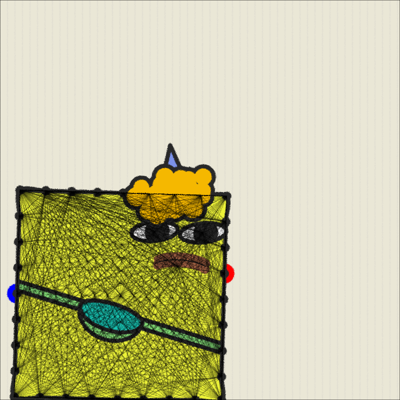
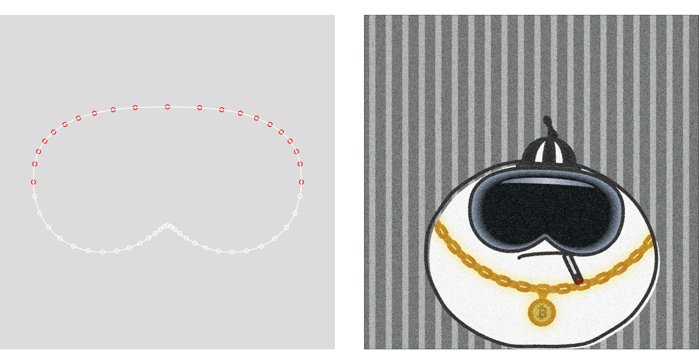

Mochi為PFP生成式互動生物創作。透過不同形狀、五官、裝飾、尺寸、顏色等元素組合，隨機組成為獨一無二，具性格特色的角色。
使用toxiclibs.js物理函式庫製作Q彈動態，將形狀分解成點與點之間用彈簧連接的構成方式，並測試不同的點分布與連接形式與彈簧參數設定，以達成最終的彈性效果，不同形狀也需微調成不同的架構。 下圖從左至右呈現由硬到軟的物理狀態。
彈簧連接方式測試。連接中心圈可增加穩固，中心圈外擴可增強硬度。


拖曳測試。
拖曳點default為中心，如滑鼠拖曳時靠近頂端則改為頂端，拖曳頭飾。
Mochi中各個角色本體、配件、與背景整體皆使用p5.js，以圖形函數、貝茲曲線等方式繪製，無嵌入圖片。

work in progress, made with #p5js pic.twitter.com/ovN3lu5klO
— Min Chen (@minimumfunction) January 25, 2024
Mochi角色特徵分類集合。含：色票、尺寸、形狀、背景、眼睛、嘴巴、特殊表情(幣圈常見情緒)、頭飾、一般飾品。
Click to interact with Mochi